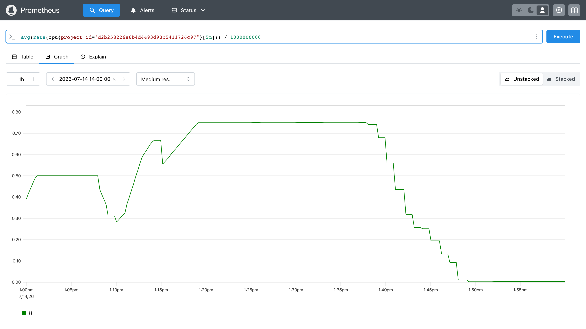

Day 29: 告警與自動擴縮——讓雲自己反應¶
Day 28 把用量變成了 Prometheus 裡的數字。今天讓那些數字產生後果:Aodh 用 PromQL 盯著它們,超標時通知 Heat 自己長出機器,負載退了再自己收回去。同時補上 Day 5 沒教完的 Heat autoscaling。本章的價值不在「裝起來」——而在官方主推的這條路上,有四個缺口是文件不會告訴你的,包括官方範例至今仍在用一個會回 403 的寫法。

你在課程的哪裡
- Day 28:計量資料流進 Prometheus,而且每筆都帶
project_id。 - 今天:Aodh 用 PromQL 查那些資料下判斷 → 觸發 Heat 的擴縮政策 → VM 自動增減。
- 今天之後:Day 30 把同一批數字換算成帳單。
第一次接觸 Aodh?先讀這段¶
Aodh 是 OpenStack 的 CloudWatch Alarms。它本身不存資料、也不畫圖,只做一件事:定期問一次「現在的數字超標了嗎」,狀態變化時打通知出去。
三個名詞今天會一直出現:
- alarm(告警):一條規則。「team-a 的平均 CPU 超過 0.4 顆核」就是一條。
- state(狀態):每條告警永遠處在
ok(沒超標)、alarm(超標)、insufficient data(算不出來)三者之一。 - action(動作):狀態變化時要打的 webhook。
alarm_actions在轉為超標時打,ok_actions在轉回正常時打。
第三個狀態 insufficient data 今天會咬人:它既不觸發 alarm_actions、也不觸發 ok_actions。告警卡在這個狀態時,整條鏈默默不動,而且沒有任何錯誤。
原理與架構¶
今天要接起來的是一條四棒接力,每一棒的交接處都有雷:
flowchart TB
VM["VM 燒 CPU"] ==> CEIL["Ceilometer 取樣<br/>(Day 28)"]
CEIL ==> PROM["Prometheus 存<br/>(Day 21)"]
PROM ==> AODH["aodh-evaluator<br/>用 PromQL 算、判斷"]
AODH ==>|"webhook"| HEAT["Heat ScalingPolicy<br/>→ 開新 VM"]
HEAT -.->|"新 VM 也被取樣<br/>形成回饋迴路"| CEIL注意最後那條虛線:擴容出來的新機器會再被計量,平均值因此改變——這是一個閉環的控制系統,不是單向管線。這件事在步驟 5 會產生一個很好看的結果。
一個先天限制,決定了今天的設計¶
教科書的 Heat autoscaling 是這樣鎖定「哪些機器算同一組」的:
metadata: {"metering.server_group": {get_param: "OS::stack_id"}} # 幫 VM 貼標籤
type: OS::Aodh::GnocchiAggregationByResourcesAlarm # 再用標籤篩
它成立的前提是 Gnocchi 存得住 resource metadata。而 Ceilometer 推進 Prometheus 的指標,身上只有四個 label:
__name__ = cpu
job = openstack-telemetry
project_id = d2b258226e6b4d4493d93b5411726c97
resource_id = dd3cfe9a-0301-470c-bef5-c8620dc4e3f5
user_id = 1384190dc01245789ea1465816402146
沒有 server_group,沒有任何自訂 metadata。Day 26 講的「儲存層換人」在這裡露出代價:換掉 Gnocchi,也換掉了「用任意標籤圈選機群」的能力。Prometheus 路線能拿來收斂範圍的,只剩 project_id 與 user_id。
所以今天的做法是:一個 scaling group 一個 project。這聽起來像將就,其實正是 Day 27 蓋好的東西——租戶邊界本來就該是資源邊界。缺口與解法在這裡剛好對上。
步驟¶
步驟 1:部署 Aodh¶
echo 'enable_aodh: "yes"' | sudo tee -a /etc/kolla/globals.yml
source ~/kolla-venv/bin/activate
kolla-ansible deploy -i ~/all-in-one --tags aodh
四個容器(api / evaluator / notifier / listener)healthy 即可續行。
步驟 2:讓 Aodh 找得到 Prometheus¶
建一條 PromQL 告警試試:
pip install python-aodhclient # CLI 外掛,同型雷第 N 次
source /etc/kolla/admin-openrc.sh
TEAM_A=$(openstack project show team-a -f value -c id)
openstack alarm create --type prometheus --name day29-vm-count \
--query "count(cpu{project_id=\"$TEAM_A\"})" \
--comparison-operator ge --threshold 1 --evaluation-periods 1 --granularity 60
告警建立成功,但狀態停在 insufficient data,evaluator 的 log 說:
Aodh 不從 Keystone 服務目錄找 Prometheus——它讀一個設定檔,而 kolla 不會產生這個檔(完整判讀見地雷 1)。自己補:
PW=$(sudo grep '^prometheus_password:' /etc/kolla/passwords.yml | awk '{print $2}')
sudo mkdir -p /etc/openstack
sudo tee /etc/openstack/prometheus.yaml << EOF
host: admin:${PW}@10.0.0.4
port: 9091
EOF
那個 admin:密碼@ 不是筆誤
Day 21 的 Prometheus 有 basic auth,而 Aodh 這條鏈上沒有任何地方可以填帳號密碼(地雷 2)。把憑證內嵌進 host 字串是唯一不必拆掉認證的解法。
檔案在主機上,但 Aodh 跑在容器裡——用 kolla 的官方機制掛進去:
sudo tee -a /etc/kolla/globals.yml << 'EOF'
aodh_extra_volumes:
- "/etc/openstack:/etc/openstack:ro"
EOF
kolla-ansible deploy -i ~/all-in-one --tags aodh
步驟 3:第一條告警,兩個方向都要驗¶
超標會叫了。但只驗一個方向不算驗——條件不成立時它必須回得來,否則你分不清「真的在算」和「卡在 alarm 動不了」:
門檻改成 99(不可能達到),狀態應回 ok。這裡要用 API 看,不要用 CLI:
TOKEN=$(openstack token issue -f value -c id)
AODH=$(openstack endpoint list --service alarming --interface public -f value -c URL)
curl -s -H "X-Auth-Token: $TOKEN" "$AODH/v2/alarms/<alarm-id>" | python3 -m json.tool
"state": "ok",
"prometheus_rule": {
"comparison_operator": "ge",
"threshold": 99.0,
"query": "count(cpu{project_id=\"d2b258226e6b4d4493d93b5411726c97\"})"
}
threshold 1 → alarm、threshold 99 → ok,兩個方向都對,告警是真的在算。至於為什麼不用 openstack alarm show 看規則——見地雷 5。
驗完把門檻改回來:openstack alarm update day29-vm-count --threshold 1。
步驟 4:Heat autoscaling 補課¶
Day 5 教了 Heat 的範本與 stack,但沒教自動擴縮。補上三個資源:
| 資源 | 做什麼 |
|---|---|
OS::Heat::AutoScalingGroup |
一群同規格的 VM,有 min_size / max_size 上下限 |
OS::Heat::ScalingPolicy |
一個「加一台」或「減一台」的動作,附帶 cooldown |
OS::Aodh::PrometheusAlarm |
條件成立時去打 ScalingPolicy 的 webhook |
先確認 Heat 認得這個告警型別:
| OS::Aodh::Alarm |
| OS::Aodh::CompositeAlarm |
| OS::Aodh::EventAlarm |
| OS::Aodh::GnocchiAggregationByMetricsAlarm |
| OS::Aodh::GnocchiAggregationByResourcesAlarm |
| OS::Aodh::GnocchiResourcesAlarm |
| OS::Aodh::LBMemberHealthAlarm |
| OS::Aodh::PrometheusAlarm |
三種 Gnocchi 型別仍在(教科書那條路),而 PrometheusAlarm 也已經是一等公民——Day 26 講的路線之爭,在這張清單上看得一清二楚。
步驟 5:接起來,看它自己跑完一輪¶
完整範本(day29-autoscale.yaml在本頁最後):
cpu_high:
type: OS::Aodh::PrometheusAlarm
properties:
query:
str_replace:
template: 'avg(rate(cpu{project_id="PID"}[5m])) / 1000000000'
params:
PID: { get_param: project_id }
comparison_operator: gt
threshold: 0.4
alarm_actions:
- str_replace:
template: trust+url
params:
url: { get_attr: [scale_out, signal_url] }
三個地方值得停下來看:
rate(cpu[...]) / 1000000000——cpu 是累計的 CPU 奈秒數,取速率再除以 10⁹ 就是「用掉幾顆核」。窗口 [5m] 不能再短,原因見地雷 4。
trust+url——這不是筆誤,str_replace 會把它變成 trust+http://...。官方 autoscaling 範例用的 alarm_url 在本課環境會回 403(地雷 3),這是今天最大的一顆。
用 project_id 收斂——就是前面說的那個先天限制。
以租戶身分建立 stack(這朵雲的日常操作本來就不該全用 admin):
source ~/team-a-openrc.sh
openstack stack create day29-as -t ~/day29-autoscale.yaml \
--parameter project_id=$TEAM_A --wait
範本裡的 VM 開機後會燒 CPU 一段時間再自己停。接下來什麼都不用做,看它跑:
13:08:28 aodh notifier → gets response: 200 OK
13:08:30 ASG 巢狀 stack UPDATE started
13:08:43 UPDATE completed → 2 台
13:08:44 scale_out Remaining as alarm due to 1 samples outside threshold,
most recent: 0.40572612101851857
13:13:28 aodh notifier → gets response: 200 OK
13:13:45 scale_out most recent: 0.6274204384722222 → 3 台(max_size)
13:43:36 scale_in Transition to ok due to 1 samples inside threshold,
most recent: 0.25709375 → 2 台
13:48:36 scale_in Remaining as ok ... most recent: 0.010958333333333334
→ 1 台(min_size)
1 → 2 → 3 → 2 → 1,負載上升擴到天花板,燒錄結束縮回地板。
那些 most recent: 的數字是決定性證據:Heat 收到的訊號裡帶著 Aodh 現算出來的 PromQL 結果,而且每次都不一樣(0.4057 → 0.6274 → 0.2571 → 0.0110),忠實反映負載的起落。
同一段時間,把告警用的那條查詢畫成圖,整件事一眼看完:

對照著看更有意思:
- 13:10 與 13:15 那兩個凹陷——正是新機器加進來、還沒開始燒 CPU,把平均值拉低的瞬間。這就是前面那條回饋虛線的實體。
- 13:19 之後平在 0.75——三台全在燒,
max_size到頂,再高也不會有第四台。 - 13:38 起一路下滑到 0——燒錄陸續結束,
ok_actions把機器收回min_size。
Aodh 的告警清單在哪個主控台看?
哪裡都看不到——Aodh 沒有面板。 Day 28 那則說明提過:kolla 的 horizon role 逐一列出各服務時,Ceilometer 只有政策檔,Aodh 連一列都沒有。
所以今天的告警只能用 openstack alarm 系列指令或 API 查——而地雷 5 還告訴你,連 CLI 都看不全(prometheus 型告警的規則要問 API)。Sprint 5 到目前為止唯一有畫面的服務是 CloudKitty,那是 Day 30 的事。
上面那張 Prometheus 曲線之所以珍貴,正是因為它是這一天唯一看得見的東西。
凹陷差點造成誤判
13:10 那個凹陷掉到 0.28,已經低於 0.4 的門檻。如果 Aodh 剛好在那一刻評估,它會判定 ok 並開始縮容——擴容才剛做完就反手縮回去,也就是 flapping。這一輪沒被觸發,只因為 evaluation_interval 預設 300 秒、剛好跨過那個凹陷——那是時間點的巧合,不是機制的保證。擋 flapping 要靠 cooldown 明確設定,不能指望評估週期夠鈍。
最後一筆是 ok → ok,不是轉態
repeat_actions 預設為 true,意思是只要還停在該狀態,每次評估都會再送一次動作。所以縮容不是只發生一次,而是一路把機器數走回 min_size。這個預設值決定了擴縮的行為,值得記住。
別用機器數量判斷擴容成功
ASG 數量從 1 變 2,在滾動更新(改了範本觸發 VM 汰換)期間也會出現——先建新的再刪舊的,中間必然短暫看到 2 台。兩者在數字上一模一樣,光看台數分不出來。要看 notifier 的 200 OK 加上 stack event 裡的 signal 記錄,那才是因果。
驗收 checkpoint¶
逐項驗證,全部符合判準才算完成今天:
| 驗證 | 判準 | 本課環境的結果 |
|---|---|---|
| Aodh 容器 | api / evaluator / notifier / listener 全 healthy | 符合 |
| 插件載入 | evaluator log 無 Could not load 'prometheus' |
載入失敗次數 0 |
| 告警雙向 | 門檻 1 → alarm;門檻 99 → ok |
兩個方向都對(API 原始 JSON 為證) |
| webhook 送達 | notifier 回應 2xx | gets response: 200 OK |
| 擴容全鏈 | 告警觸發後 Heat 真的加機器 | 200 OK → 2 秒後 ASG UPDATE → 新 VM |
| 訊號內容 | Heat 收到的 signal 帶真實 PromQL 值 | most recent: 0.40572612101851857 |
| 縮容 | 負載結束後回到 min_size |
3 → 2 → 1 |
地雷記錄¶
地雷 1:Aodh 不讀 Keystone 服務目錄,而 kolla 不產它要的檔¶
症狀:Could not load 'prometheus': Can't find prometheus host and port configuration。
根因:兩層。第一層,observabilityclient 找 Prometheus 的方式是讀設定檔,不是查 Keystone 目錄——它依序找 /var/lib/aodh/.config/openstack/ 與 /etc/openstack/ 下的 prometheus.yaml,只認得 host / port / ca_cert 三個鍵(或環境變數 PROMETHEUS_HOST / PROMETHEUS_PORT)。第二層,kolla 完全不產生這個檔。
解法:自己寫 /etc/openstack/prometheus.yaml,再用 aodh_extra_volumes 掛進容器。
教訓:OpenStack 裡「一個服務怎麼找到另一個服務」有三種機制——Keystone 服務目錄、設定檔、環境變數——而且沒有統一規則。在 Keystone 註冊一個 metric endpoint 對這條路完全無效,因為 Aodh 根本不看目錄。遇到「找不到某服務」時,先確認它用的是哪一種,再動手。
地雷 2:Prometheus 有認證,而這條鏈上沒有地方填帳密¶
症狀:設定檔補好、插件載入成功,換成 [401] Unauthorized。
根因:Day 21 的 kolla Prometheus 帶 basic auth。但 observabilityclient 的設定檔 schema 只有 host / port / ca_cert,沒有帳密欄位——底層 client 明明有 set_basic_auth(),整條鏈卻沒人呼叫它。
解法:client 是拿 host 字串直接拼 URL 的,所以把憑證內嵌進去可行:
教訓:這是「上游功能缺口」的典型長相——不是 bug,是沒人接上。另一條路是把 Prometheus 的認證關掉,但那是為了讓監控能用而拆掉監控的門鎖,不該是預設反應。先找不犧牲安全的解法。
地雷 3:官方 autoscaling 範例的 alarm_url 會回 403¶
症狀:告警正確轉態、notifier 也確實送出了,但 Heat 回:
手動打那個 URL,拿到完整訊息:
<ErrorResponse><Error><Type>Sender</Type><Code>AccessDenied</Code>
<Message>User is not authorized to perform action</Message></Error></ErrorResponse>
根因:OS::Heat::ScalingPolicy 的 alarm_url 是一個 CFN 風格的 EC2 簽章 URL。Heat 收到後會把憑證送去 Keystone 的 /v3/ec2tokens 驗證,而那裡回 401:
INFO heat.api.aws.ec2token Authenticating with http://10.0.0.4:5000/v3/ec2tokens
ERROR heat.api.aws.ec2token Failed to obtain a Keystone token from None:
keystoneauth1.exceptions.http.Unauthorized: (HTTP 401)
解法:改用現代路線 trust+url——Aodh 的 trust+http 通知器用 Keystone trust 拿 token 打 Heat 的原生 API(8004),完全不碰 EC2 簽章:
alarm_actions:
- str_replace:
template: trust+url
params:
url: { get_attr: [scale_out, signal_url] }
改完立刻從 403 變 200 OK。確認 Aodh 認得這個 scheme:
sudo docker exec aodh_notifier python3 -c "
from importlib.metadata import entry_points
for ep in entry_points(group='aodh.notifier'): print(ep.name)"
教訓:這顆最值錢,因為官方文件的 autoscaling 範本至今仍寫 alarm_url。照著抄不會語法錯、stack 會建成功、告警也會轉態——只有最後一棒默默 403。「範例能跑」和「範例是對的」是兩件事,而年代久遠的範例最容易在認證機制上過期。
地雷 4:取樣太稀,告警卡在 insufficient data 而且不叫¶
症狀:告警停在 insufficient data,PromQL 查詢回空,零錯誤訊息。
判讀關鍵:先把告警用的那條查詢自己打一次。這是本章最有用的除錯手勢——它一秒分辨「Aodh 壞了」和「查詢本來就沒結果」:
for W in 1m 2m 3m 5m; do
curl -s -u admin:$PW --get http://10.0.0.4:9091/api/v1/query \
--data-urlencode "query=avg(rate(cpu{project_id=\"$TEAM_A\"}[$W]))"
done
根因:兩件事相乘。rate() 需要窗口內至少兩個取樣點才算得出速率;而 Ceilometer 的預設取樣間隔是 300 秒:
五分鐘一個點,[1m] 的窗口裡永遠只有 0~1 個點 → rate() 回空 → 告警算不出來 → insufficient data。
解法:把取樣調密,窗口留寬:
sudo mkdir -p /etc/kolla/config/ceilometer
sudo docker exec ceilometer_central cat /etc/ceilometer/polling.yaml \
| sed 's/interval: 300/interval: 60/' \
| sudo tee /etc/kolla/config/ceilometer/polling.yaml
kolla-ansible deploy -i ~/all-in-one --tags ceilometer
60 秒取樣配 [5m] 窗口 = 窗口內五個點,穩。
教訓:insufficient data 既不觸發 alarm_actions 也不觸發 ok_actions——整條自動化鏈就這樣靜靜地不動,沒有錯誤、沒有告警、沒有任何人通知你。它是三個狀態裡最危險的一個,因為 ok 至少代表「算過了,沒事」,而 insufficient data 代表「根本沒算」。看到它,先查資料源,別查 Aodh。
順帶算一下端到端延遲
Ceilometer 取樣 60s + rate() 窗口 5m + Aodh 的 evaluation_interval 預設 300s —— 從負載真的上升到機器真的長出來,最壞情況要好幾分鐘。這不是故障,是這條鏈的物理極限。要更快就得三個一起調,而每一個都有代價。
地雷 5:CLI 的 rule 欄對 prometheus 告警顯示 null¶
症狀:openstack alarm show <name> -f json 的 rule 欄是 null,看起來像規則沒設定。
根因:prometheus 型告警的規則存在 prometheus_rule 這個欄位裡,CLI 的 rule 欄對不上,於是顯示 null。規則其實好端端在那。
解法:驗規則就問 API。
教訓:這是今天第一顆「顯示不等於真相」——CLI 沒說謊,它只是沒顯示。Day 27 還有一顆更狠的同族(查詢直接回空,而限制正在執行)。當 CLI 的輸出讓你想說「這不可能」時,換個介面問一次。
完整範本¶
heat_template_version: 2021-04-16
description: Day 29 - PromQL 驅動的自動擴縮
parameters:
project_id:
type: string
description: 用 project_id 收斂告警範圍(Prometheus 路線沒有 server_group label)
resources:
asg:
type: OS::Heat::AutoScalingGroup
properties:
min_size: 1
max_size: 3
desired_capacity: 1
resource:
type: OS::Nova::Server
properties:
image: cirros
flavor: m1.tiny
networks:
- network: team-a-net
user_data_format: RAW
user_data: |
#!/bin/sh
# 開機後燒 CPU 30 分鐘再自己停
# cirros 的 busybox 沒有 timeout 指令,只能自己算時間
(
END=$(( $(date +%s) + 1800 ))
while [ "$(date +%s)" -lt "$END" ]; do
i=0; while [ $i -lt 200000 ]; do i=$((i+1)); done
done
) &
scale_out:
type: OS::Heat::ScalingPolicy
properties:
adjustment_type: change_in_capacity
auto_scaling_group_id: { get_resource: asg }
cooldown: 60
scaling_adjustment: 1
scale_in:
type: OS::Heat::ScalingPolicy
properties:
adjustment_type: change_in_capacity
auto_scaling_group_id: { get_resource: asg }
cooldown: 60
scaling_adjustment: -1
cpu_high:
type: OS::Aodh::PrometheusAlarm
properties:
description: team-a 平均 CPU 超過 0.4 顆核就加機器
query:
str_replace:
template: 'avg(rate(cpu{project_id="PID"}[5m])) / 1000000000'
params:
PID: { get_param: project_id }
comparison_operator: gt
threshold: 0.4
alarm_actions:
- str_replace:
template: trust+url
params:
url: { get_attr: [scale_out, signal_url] }
ok_actions:
- str_replace:
template: trust+url
params:
url: { get_attr: [scale_in, signal_url] }
timeout 那行註解不是廢話
第一版寫的是 timeout 1800 sh -c 'while :; do :; done' &,結果 VM 靜靜地閒置,平均 CPU 永遠 0。原因在 console log 裡:
cirros 的 busybox 沒有 timeout 指令,腳本第三行就死了,而 Nova 照樣回報 ACTIVE。VM 開起來 ≠ 你的 user_data 跑起來,差一個 openstack console log show 才看得到。
帶得走的東西¶
insufficient data是三個告警狀態裡最危險的一個。ok代表「算過了,沒事」;insufficient data代表「根本沒算」,而它不觸發任何動作、不產生任何錯誤。看到它先查資料源,別查告警系統。- 「範例能跑」和「範例是對的」是兩件事。 官方 autoscaling 範本至今寫著
alarm_url——語法對、stack 建得起來、告警也會轉態,只有最後一棒默默 403。年代久遠的範例最容易在認證機制上過期。 - 自動擴縮是閉環控制系統,不是單向管線。 加機器會稀釋平均值,平均值又決定要不要再加——所以擴容後必然出現凹陷,而
cooldown是為那個凹陷存在的,不能指望評估週期夠鈍剛好跨過去。 - 端到端延遲是取樣間隔 ×
rate()窗口 × 評估間隔的疊加。 每一項都有代價,要更快就得三個一起調。 - VM 開起來不等於你的 user_data 跑起來。 Nova 回報
ACTIVE只代表機器活著,腳本第三行死掉它不會告訴你——差一個console log show才看得到。
延伸閱讀¶
想往下深挖,從這幾份開始:
- Aodh 官方文件 —— 告警型別、評估器、通知器的完整說明。
- Heat autoscaling 範本指南 ——
AutoScalingGroup/ScalingPolicy的完整屬性;注意其 autoscaling 範例仍使用alarm_url(見地雷 3)。 - Prometheus
rate()的使用注意 —— 「窗口內至少兩個點」的權威出處;本章地雷 4 的理論根據。 - Kolla-Ansible 的 Telemetry 指南 —— Ceilometer / Aodh 在 kolla 這側的官方對照。
下一步¶
雲會自己反應了。Day 30 把同一批 Prometheus 數字換成錢——CloudKitty 分租戶出帳單,而且會再撞到一顆「帳單永遠 0 元卻不報錯」的雷。